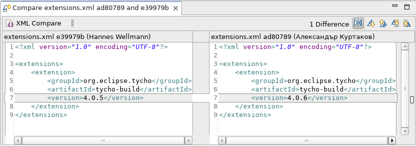
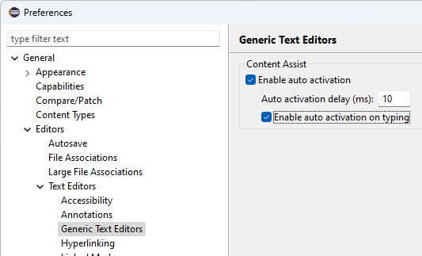

Here are descriptions of some of the more interesting or significant changes made to the Eclipse Platform for the 4.32 release of Eclipse. They are grouped into:
We also recommend to read the Tips and Tricks.
Text Editors |
|
| Compare Editor meets Generic Editor |
The Compare Editor opened on file types supported by the Generic Editor now shows the same syntax highlighting as in the Generic Editor. To get most of this feature, the latest TextMate (tm4e) with the Language Pack should be installed.  |
Preferences |
|
| Generic Text Editors Preference Page |
The Generic Text Editor now has its own preference page. It is now possible to change the Content Assist behavior for the Generic Text Editor as well as for all editors based on it. It is located under General > Editors > Text Editors.  |
General Updates |
|
| Support for Windows on ARM |
The Eclipse SDK is now also available for Windows on the ARM-64bit architecture. Eclipse Packages are not yet provided for Windows on ARM due to missing Eclipse Temurin JDKs for that environment, but the SDK should be completely functional on that platform, with only the following limitations:
|